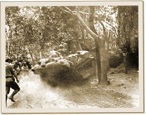

|
j
a v a s c r i p t |
April 6, 1942

Stop that tank!
VoF reports heavy fighting continues in Bataan with the Japanese throwing everything into the battle: artillery, planes, barges, landing craft and tanks. In short, this is it: the height of the grand offensive! Two days ago, an amphibian blew into town carrying a Col. Alfred Kritschmer and one Col. Wolfgang Von Grunau. Manilans are talking about the spectacle last Saturday of two Germans walking down the Escolta accompanied by Italian and Japanese officials. The Germans were resplendent in brilliant uniforms while the Japanese officers were making an effort to strut in their style and appear equally important. Behind them, two more Japanese officers followed but in an ambling gate — a sight, I'm told, that was a scream. "Oh for a movie camera," said the eyewitness. Viegelmann reported Von Grunau said that Germany would move through the Caucasus this summer and into Iraq, while the Japanese would go through India and meet them in Basra. Being a nazi himself, Viegelmann believed every word. A Nichi-Nichi correspondent reported that Filipinos are "gradually imitating" the ways of Japanese soldiers by, for instance, clipping their hair short. (The Tribune said long ago that it was for economy.) It was a stirring sight, moreover, to see piles of mangoes, bananas and pineapples voluntarily offered by Filipinos in front of the graves of Japanese soldiers killed in the war in solemn imitation of the Japanese custom of remembering the dead. On this ludicrous subject, to date no one here knows how and where Japanese casualties are buried. We suspect they are cremated and the ashes sent to Tokyo. They are extremely sensitive about movements of their sick and wounded, not to mention their dead. As for the Japanese custom of leaving fruit on graves, I doubt if Filipinos would leave scarce and expensive food on the graves of Japanese soldiers. I haven't even tasted fresh pineapple since the start of the war! |
|
|
|
|